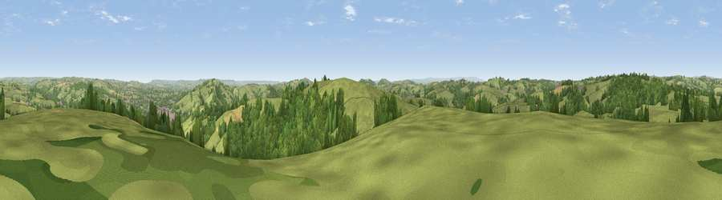

Viewpoint near Tiverton
#9884 in England · top 11% of its area beats it · near TivertonWhere it is
The exact computed spot (SS 92788 12225). Click the marker for map links.
The view, rendered

A 360° render of this exact spot computed from the terrain model, tree cover and land cover — summer colours, afternoon light, calibrated against photographs of famous viewpoints. Real trees, hedges and buildings will differ in detail.
The panorama
Grey silhouette: terrain skyline in each direction (720 bearings, Earth curvature and refraction included). Dashed green: skyline with trees (+15 m) and buildings (+8 m) as obstacles. Blue strip: how far the ground is visible on each bearing.
Where the view opens
Wedge length = distance to the farthest visible ground on that bearing (vegetation-aware). Rings at 10, 25 and 50 km.
What fills the view
58% grassland · 33% woodland · 7% cropland · 3% built-up
Angular shares of the visible panorama (visual magnitude), not map area. Landscape diversity 0.42 (0–1 Shannon).
Key numbers
More beautiful places nearby
The staircase of upgrades: each row has a higher view potential than everything closer. Driving times are estimates from straight-line distance, calibrated against real road routing — check an actual route before setting out.
| Place | Direction | Drive | Score |
|---|---|---|---|
| Seven Crosses Hill | SSE · 1 km | ~2 min | 65.0 |
| Viewpoint near Cadeleigh | SSE · 2 km | ~5 min | 66.7 |
| Viewpoint near Butterleigh | SSE · 7 km | ~15 min | 68.1 |
| Cadbury Castle | S · 7 km | ~15 min | 73.7 |
| Fursdon Hill | S · 7 km | ~15 min | 76.2 |
| Viewpoint near Bradninch | SSE · 9 km | ~18 min | 77.7 |
| Raddon Hills | SSW · 9 km | ~18 min | 78.2 |
| Viewpoint near Stockleigh Pomeroy | SSW · 10 km | ~19 min | 78.9 |
50.89952, -3.52598 · source: screening · position refined by local search. Computed location — check access rights before visiting.